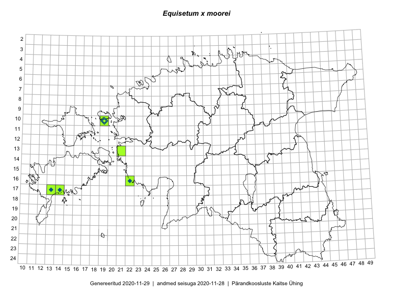

Equisetum x moorei
Uuendatud: 2016-12-01
Kaardile koondatud taksonid: Equisetum x moorei Newman

Kaart põhineb 9 kirjel.
Viited andmebaasikirjetele
- Mari Reitalu, Sirje Azarov: 2015-05-12: 17-13: ala
- Mari Reitalu, Sirje Azarov: 2015-05-12: 17-13: GPS punkt
- Mari Reitalu, Sirje Azarov: 2015-05-12: 17-14: ala
- Mari Reitalu, Sirje Azarov: 2015-05-12: 17-14: GPS punkt
- Thea Kull, Helle Mäemets: 2016-07-07: 06-24: ala
- Toomas Kukk, Meeli Mesipuu, Johannes Kõdar: 2016-08-11: 17-14: ala
- Peedu Saar, Ott Luuk: 2016-10-08: 17-13: GPS punkt
- Ott Luuk, Peedu Saar: 2016-10-08: 17-13: ala
- Meeli Mesipuu, Toomas Kukk, Johannes Kõdar: 2016-08-11: 17-14: GPS punkt